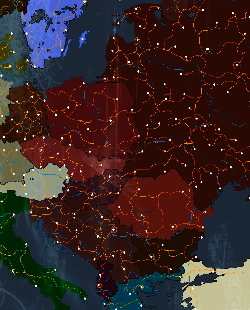
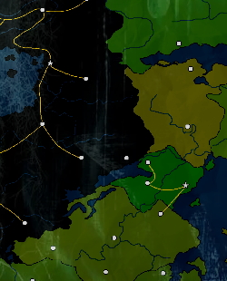
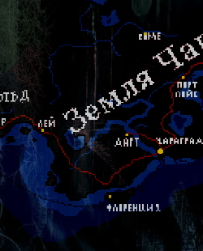

ㅤ
Что если?
Что если?

— Молот и Наковальня
История порой преподносит сюрпризы, и один неверный шаг может кардинально изменить дальнейший ход событий. Оригинальный сценарий завершился относительной победой Организации Варшавского Договора (ОВД), сохранившей независимость Югославии и нескольких её союзников. Советский Союз и его сателлиты оказались побеждены, утратив прежнее могущество и контроль над Восточной Европой. Но что, если мы рассмотрим альтернативный вариант развития событий? Предположим, что в решающий момент блок стран-членов ОВД не смог объединиться, и распад произошел еще раньше.
Переход на оргинальную историю.
— Читать

— Федерация RussLand
Оригинальная история завершилась трагически: Федерация потерпела полное поражение, а её области были поглощены хаосом. Предательства, лжи, убийств и заговоров оказалось достаточно, чтобы страна оказалась в пучине нищеты и голода. Последний монарх, потеряв надежду спасти родину, вынужден был бежать, бросив столицу на произвол судьбы. Но что, если бы всё пошло иначе? Предположим, что в критический момент зимнего собрания монарх нашёл в себе силы проявить твёрдость и решительность. Вместо пассивного наблюдения за происходящим, он принял бы меры для спасения государства.
Переход на оргинальную историю.
— Читать

— Сталь 1925
Реальная история завершилась ужасающим поражением игроков: истощённые голодом, охваченные болезнями и раздираемые внутренними распрями, они не сумели вовремя договориться между собой. Когда наконец компромисс был найден, было поздно — враг уже подошёл вплотную и приступил к разрушительному штурму. Итог оказался трагическим: миллионы погибли, страны лежали в руинах. Но что, если бы обстоятельства сложились иначе? Допустим, лидеры государств смогли преодолеть разногласия ещё до начала катастрофы.
Переход на оргинальную историю.
— Читать
ㅤ